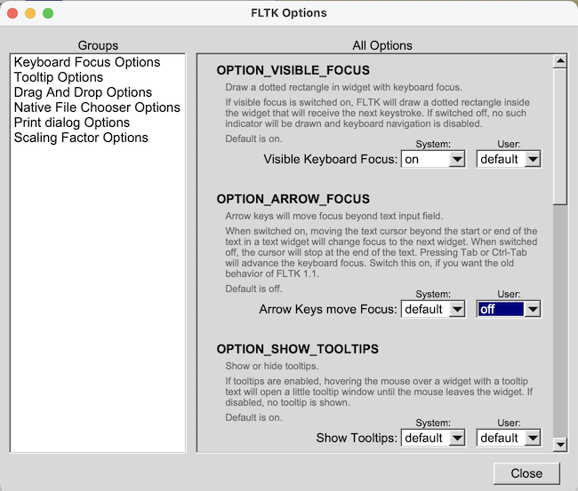

- Generated by
 1.13.2
1.13.2
|
FLTK 1.4.4
|
In this chapter, we will cover how to access and alter settings for applications created using FLTK, both as an administrator and as a regular user.
Subchapters:
FLTK keeps track of various aspects of the user interface in a system-wide database. Users have the ability to set their own preferences and override default or system settings. For instance, FLTK will display a dotted rectangle around the widget with current focus. This might not be desirable for users who do not use keyboard navigation and do not need the rectangle. This can be turned off by setting the OPTION_VISIBLE_FOCUS option to 'off' for that user, which will disable the focus rectangle in all FLTK-based applications.
Options are kept in preference files using the signature Fl_Preferences::CORE_SYSTEM, "fltk.org", "fltk" for system-wide settings and Fl_Preferences::CORE_USER, "fltk.org", "fltk" for individual users. They can be accessed by using the function bool Fl::option(Fl_Option opt). If an application needs to temporarily override user or system settings, it can use the function void option(Fl_Option opt, bool val).
To make changes to options permanently, FLTK provides an administrative tool called fltk-options.
fltk-options is a hybrid app that is part of FLTK and can be installed on the target system. It includes an up-to-date man page.

When fltk-options is called without any command-line arguments, it opens in interactive mode and provides a user interface to view and alter all system and current user options.
Starting the tool from a shell, the command-line options -S and -U can be used to display or change system or user options. On MS-Windows, fltk-options is also available as fltk-options-cmd.exe.
Calling fltk-options --help gives a list of all available commands, and options and their values. fltk-options --help OPTION prints more detailed information for OPTION if available. In interactive mode, tooltips provide this additional information.
A full list of options can be found in the manual at Fl::Fl_Option.
| [Prev] Using OpenGL | [Index] | Advanced FLTK [Next] |